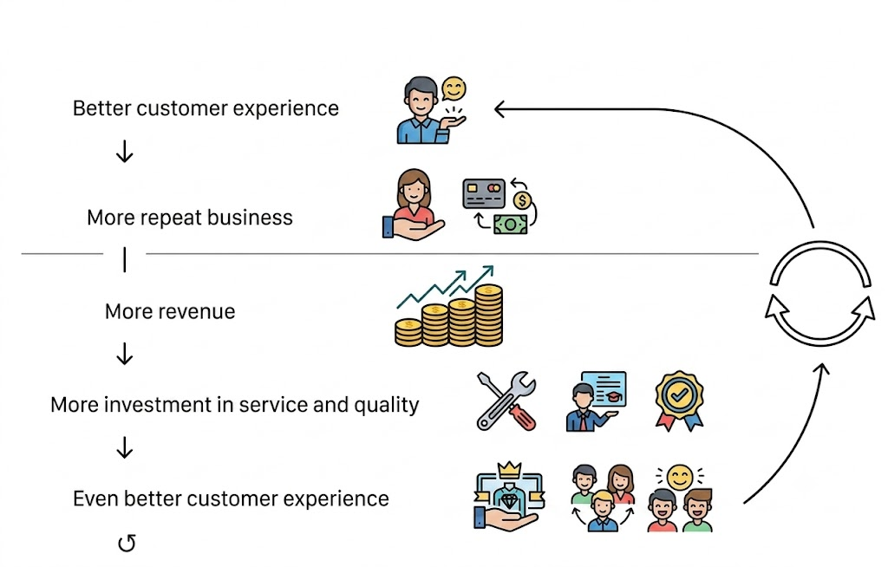
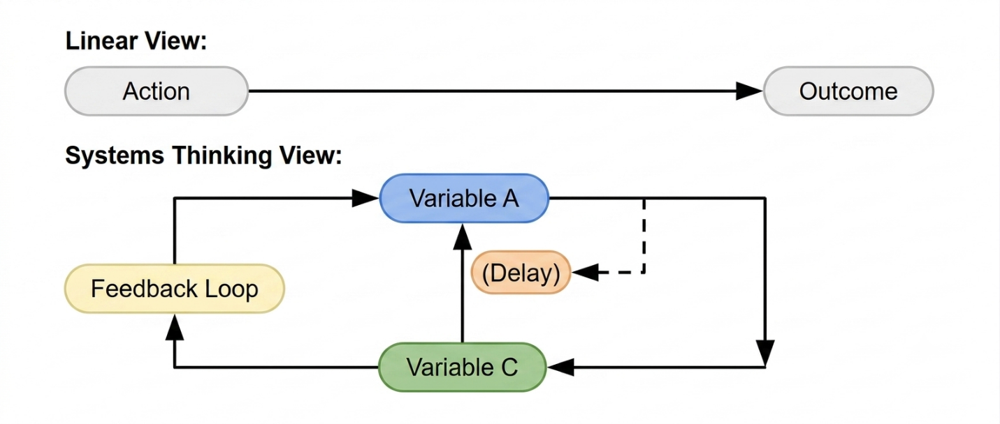
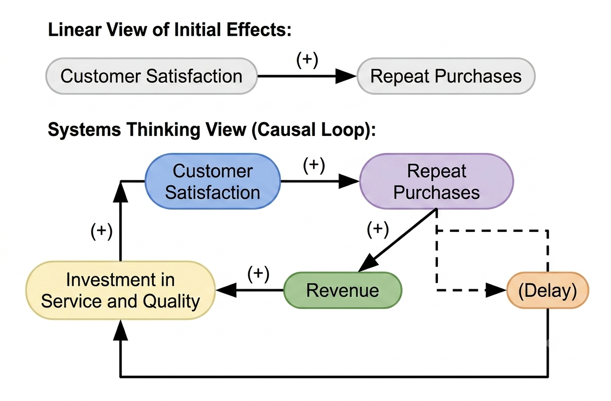
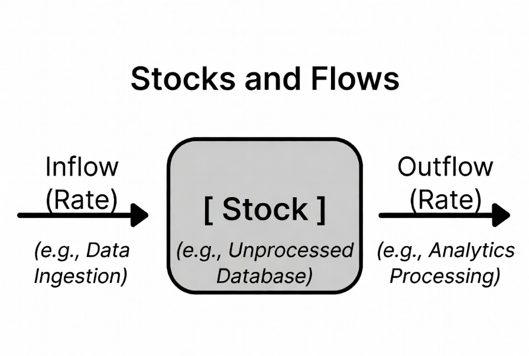

2.3 Systems Thinking
The value chain helps managers identify where value is created inside a firm. Systems thinking adds another layer: it shows how those value-creating activities are connected and how changes in one part of the business can affect the whole.
In real organizations, work does not stay neatly inside one department. Sales, operations, purchasing, logistics, finance, HR, and customer service are all linked. A change in one area often ripples through several others. For example, if sales forecasts improve, the firm may buy different amounts of inventory, revise production schedules, and adjust shipping plans. If an online ordering system becomes faster, customers may be happier, but the logistics team may face greater pressure to process orders quickly. If hiring becomes easier, the firm may still need to update onboarding, training, and payroll processes.
Systems thinking starts from a simple but important idea: businesses are systems, not isolated parts. Managers should not look at each function separately and assume they understand the organization as a whole. They need to think about connections, delays, bottlenecks, and feedback loops. A decision that looks sensible in one department may create problems elsewhere. Systems thinking helps managers see those relationships more clearly and make better decisions across the enterprise.
This matters especially in digital transformation, because enterprise systems tie many workflows together. Managers who think only in terms of direct cause and effect may miss important side effects. Managers who think systemically are better able to see how one change can ripple across the organization.
This is especially important because business work rarely stays inside one department. Firms run through workflows across functional areas, and changes in one workflow usually ripple into others. A change in sales forecasting affects inventory, purchasing, production, shipping, and finance. A faster ordering system may improve customer service, but it may also increase pressure on logistics and inventory management. A better hiring process may help one team fill jobs faster, while creating downstream issues in onboarding, payroll, or training. In other words, managers cannot fully understand a business by looking at each function in isolation.
Systems thinking goes one step further by showing how those activities and processes interact over time rather than treating each one as separate. It encourages managers to look for feedback loops, dependencies, bottlenecks, and unintended consequences that may not be visible when each function is viewed on its own.
Feedback Loops: Reinforcing vs. Balancing
The structural foundation of systems thinking is the feedback loop, which comes in two main forms: reinforcing loops and balancing loops.
- Reinforcing loops (R) amplify change. They create momentum, acceleration, and compounding effects. A reinforcing loop can produce growth, but it can also produce decline. For example, better service can increase customer satisfaction, which leads to more repeat purchases, which increases revenue, which enables even better service. The same logic can also work in reverse: poor service can reduce satisfaction, cut repeat business, lower revenue, and make service even worse.
- Balancing loops (B) resist change and push the system toward stability. These loops are goal-seeking. They detect a gap between the current state and a desired target, then trigger corrective action. For example, if inventory falls below a target level, replenishment orders are placed to bring stock back into balance. If production exceeds demand, the system slows down or adjusts output.
Managers need both types of loops. Reinforcing loops help explain growth and momentum. Balancing loops help explain control and limits. Real organizations usually contain both at once, which is why business outcomes often look less like a straight line and more like a system under tension.
A useful way to think about this is to imagine the feedback structure behind a business flywheel:
Figure 2.3a Business Flywheel as a Reinforcing Feedback Loop

Source: Author-created adaptation.
Show long description
The figure shows a repeating cycle linking customer experience, revenue, and service quality. On the left side, text is arranged vertically with downward arrows between the steps. It begins with “Better customer experience” at the top, followed by “More repeat business,” then “More revenue,” then “More investment in service and quality,” and finally “Even better customer experience” at the bottom. The vertical arrows indicate that each outcome leads to the next.
In the center and right side of the figure are small icons illustrating each stage. Near “Better customer experience” is an icon of a smiling customer. Near “More repeat business” are icons showing a customer, a payment card, cash, and circular arrows, suggesting repeat purchasing. Near “More revenue” is a stack of coins with an upward trend line. Near “More investment in service and quality” are icons of tools, a worker with a document, and a quality badge, representing service improvement and quality assurance. Near “Even better customer experience” are icons suggesting premium service and a group of happy people, indicating improved customer satisfaction.
On the far right is a large circular loop made of arrows, emphasizing that the process is continuous and self-reinforcing. The visual message is that better service leads to better customer experiences, which can generate repeat business and more revenue, allowing further investment in service quality and creating an ongoing improvement cycle.
That is not a straight line. It is a reinforcing feedback loop. Once the loop starts working, each improvement makes the next improvement easier.
Causal Loop Diagrams (CLDs)
Systems thinkers often map these relationships using Causal Loop Diagrams (CLDs). A CLD has four essential elements:
- Variables: Important factors, metrics, or conditions that can increase or decrease over time. These are usually named as nouns, such as Customer Satisfaction, Employee Stress, or Inventory Stock.
- Causal links: Arrows that show a cause-and-effect relationship from one variable to another.
- Polarity indicators: Signs on the arrows that show the direction of change.
- Positive polarity (+): The variables move in the same direction. If Variable A increases, Variable B increases; if A decreases, B decreases.
- Negative polarity (-): The variables move in opposite directions. If Variable A increases, Variable B decreases; if A decreases, B increases.
- Loop labels: A label at the center of the loop identifies it as Reinforcing (R) or Balancing (B).
Figure 2.3b Linear Versus Systems Thinking

Source: Author-created adaptation.
Show long description
This diagram, titled 'Linear View vs. Systems Thinking View', presents two contrasting conceptual models of cause-and-effect relationships.
Section 1: Linear View
The top portion of the diagram displays the 'Linear View:'. It consists of two light grey, rounded rectangular boxes. The box on the left is labeled 'Action', and the box on the right is labeled 'Outcome'. A single, long, solid black arrow points directly from the 'Action' box to the 'Outcome' box. This represents a simple, one-way cause-and-effect relationship where a specific action leads directly to a final outcome.
Section 2: Systems Thinking View
The bottom portion of the diagram, titled 'Systems Thinking View:', is more complex, illustrating a dynamic, looping system. It contains four colored, rounded rectangular boxes:
Variable A: Blue, positioned at the top-center.
Variable C: Green, positioned at the bottom-center.
Feedback Loop: Pale yellow, positioned on the far left.
(Delay): Light orange, positioned centrally between Variable A and Variable C.
These components are connected in two interacting feedback loops:
Primary Loop (Clockwise): A solid black arrow points from Variable A, moving to the right and then down. It turns to the left and forms the top segment of a box shape, labeled 'Feedback Loop'. From the bottom of this 'Feedback Loop' box, an arrow continues to the right, pointing into Variable C. Another solid arrow points vertically from Variable C up to Variable A, completing a continuous clockwise loop.
Secondary Loop (with Delay): An additional feedback mechanism is integrated. From the solid arrow connecting Variable A to Variable C (on the right side of the primary loop), a dashed black arrow branches off and points left to the '(Delay)' box. From the left side of the '(Delay)' box, another dashed black arrow points left and slightly up, re-entering the primary loop structure at the bottom segment of the 'Feedback Loop' box.
The combination of solid and dashed arrows shows how variables influence each other in continuous cycles, with some effects occurring after a delay, demonstrating the interdependency and circular nature of complex systems.
One quick way to determine loop polarity is to count the number of negative links. An odd number of negative links indicates a balancing loop, while an even number, including zero, indicates a reinforcing loop.
Figure 2.3c Simple Causal Loop Diagram

Source: Author-created adaptation.
Show long description
This diagram is titled "Comparison of Linear and Systems Thinking Views," presented on a white background with clear text and distinct, rounded nodes connected by arrows. The figure is divided into two horizontally stacked sections: a top linear model and a bottom systems thinking model.
Top Section: "Linear View of Initial Effects:" This section illustrates a straightforward, direct process. It contains two gray rounded rectangular nodes, connected by a single, horizontal solid black arrow pointing from left to right.
The node on the left contains the text: Customer Satisfaction.
The single right-pointing arrow connects this to the node on the right, which contains the text: Repeat Purchases. This model shows a simple one-way cause-and-effect relationship, with no feedback loop or complexity.
Bottom Section: "Systems Thinking View (Causal Loop):" This section depicts a complex, non-linear system with multiple components forming continuous feedback loops. It contains five color-coded nodes:
Customer Satisfaction (Blue node, top-left of the loop)
Repeat Purchases (Light purple node, top-right of the loop)
Revenue (Green node, bottom-center of the loop)
Investment in Service and Quality (Pale yellow node, far-left, lower down)
(Delay) (Light orange node, centrally located within the right side of the loop)
The relationships within this systems thinking model are interconnected by solid and dashed arrows, indicating continuous interactions. All arrow links, except for those directly involving the (Delay) node, are marked with a "(+)" symbol to denote a reinforcing relationship (where an increase in one variable leads to an increase in the connected variable).
The Main Reinforcing Loop: A complex, ongoing cycle is formed by a series of solid arrows.
Loop Part 1: A solid arrow points from Customer Satisfaction (blue) to Repeat Purchases (light purple).
Loop Part 2: From Repeat Purchases (light purple), a solid arrow points down-left to Revenue (green).
Loop Part 3: From Revenue (green), a solid arrow points leftward to Investment in Service and Quality (pale yellow).
Loop Part 4: From Investment in Service and Quality (pale yellow), a solid arrow points upward back to Customer Satisfaction (blue), completing the reinforcing loop.
The Delay Factor: Integrated into the right side of the main loop is a time delay element.
A dashed black arrow branches off from the line connecting Repeat Purchases to Revenue (just below the light purple node) and points to the (Delay) node (light orange). This dashed arrow signifies a delayed or deferred relationship.
From the (Delay) node, a solid arrow then points directly into the upward solid arrow path that runs from Investment to Satisfaction. This illustrates that a time delay exists between generating revenue and that delay impacting the investment-to-satisfaction link.
Overall, the diagram effectively contrasts a direct, finite linear process (top) with an interdependent, ongoing system involving feedback loops and time delays (bottom).
In this example, each link is positive, so the loop is reinforcing. More satisfied customers lead to more repeat purchases. More repeat purchases raise revenue. More revenue allows more investment in service and quality. Better service then improves customer satisfaction again.
A simple reinforcing loop might look like this:
Customer Satisfaction (+) → Repeat Purchases (+) → Revenue (+) → Investment in Service (+) → Customer Satisfaction
Because every link is positive, this is a reinforcing loop. More satisfied customers lead to more repeat purchases. More repeat purchases raise revenue. More revenue allows more investment in service and quality. Better service then improves customer satisfaction again.
Why Stocks and Flows Matter for Information Systems
In traditional management, stocks are usually physical things such as inventory, cash, or employees. In digital transformation and business analytics, however, many of the most important stocks and flows are informational, computational, or behavioral.
A stock is something that accumulates over time and represents the state of a system at a particular moment. A flow is the rate at which the stock increases or decreases.
This distinction matters because business systems do not change all at once. They change gradually through inflows and outflows. Consider three examples:
Figure 2.3d Stocks and Flows

Source: Author-created adaptation.
Show long description
The diagram shows a classic stock-and-flow structure arranged horizontally from left to right. An inflow rate (example: data ingestion) enters a central stock (example: unprocessed database). An outflow rate (example: analytics processing) leaves the stock. The diagram illustrates how a stock accumulates when the inflow exceeds the outflow and depletes when the outflow exceeds the inflow.
Data and pipeline architecture
A stock might be the amount of unprocessed customer data sitting in a data lake. The inflow is the stream of new data arriving from apps, websites, or sensors. The outflow is the processing of that data through ETL, cleaning, and analytics tools. If data arrives faster than it can be processed, the stock of unprocessed data grows. This can create delays, increase storage costs, and leave managers with outdated information.
Customer base and churn
A stock might be the number of active users on a digital platform. The inflow is new customer acquisition, while the outflow is churn, or customers leaving the platform. A company can spend heavily on marketing, but if the user experience is poor and churn remains high, the stock of active users will not grow much.
Technical debt
A stock can also be hidden. In software systems, technical debt includes legacy code, temporary fixes, and poorly integrated applications that accumulate over time. The inflow is rushing new features into production without enough refactoring or cleanup. The outflow is the engineering work devoted to reducing complexity, upgrading systems, and improving architecture. If technical debt builds up faster than it is reduced, development becomes slower, more expensive, and harder to manage.
The main lesson is simple: managers cannot fully understand performance by looking only at current numbers. They must also understand the flows that create those numbers over time.
The Role of Delays in Stocks and Flows
Stocks create delays (or inertia) in a business system. Because stocks take time to accumulate or deplete, managerial actions rarely produce immediate results.
For instance, if a company invests in upgrading its data integration layer, the stock of high-quality, clean master data will take months to build up. Managers who expect instant strategic returns from technology investments often fail to realize that they are waiting for an underlying stock to accumulate.
Understanding stocks and flows allows managers to design systems with adequate buffering capacity, preventing sudden bottlenecks and ensuring smooth operations across digital value chains.
Why This Matters for Organizations
The value of systems thinking is that it helps organizations avoid silo thinking. A department may improve its own performance while making the broader organization less effective. For example, cutting costs in customer support might improve the support budget in the short run, but it could reduce customer satisfaction, increase complaints, and hurt sales later. A sales team might push for more orders without considering whether operations can fulfill them. A finance team might reduce spending in a way that looks efficient on paper but weakens a critical process elsewhere.
Systems thinking helps managers recognize that the organization’s real performance depends on how its parts interact, not just on how each part performs alone. It reveals leverage points—small changes that can produce large results. It also helps managers anticipate unintended consequences, which are often the hidden price of narrow decision-making.
This is one reason good technology projects sometimes fail. The software may work perfectly, but the surrounding workflows, incentives, handoffs, and timing may not. A new system can speed up one process while creating a bottleneck in another. It can make data more visible while also exposing old organizational problems that were previously hidden. Systems thinking helps managers spot those issues early, when they are still fixable.
It is also the logic behind business flywheels. A flywheel is a reinforcing system in which one success makes the next success easier. For example, a better product attracts more users, more users create more data and feedback, better data improves the product, and the improved product attracts even more users. The same pattern can appear in platforms, supply chains, customer service, and brand building. Flywheels are powerful because they show how small advantages can compound over time.
This is especially important in information systems and digital transformation. Technology rarely changes only one task. It changes handoffs, dependencies, response times, and decision-making across the firm. A new system may improve one workflow, but it can also shift work elsewhere. Systems thinking helps managers anticipate those ripple effects and design technology that improves the whole business, not just one part of it.
In short, systems thinking helps managers understand the firm as a network of connected workflows, feedback loops, bottlenecks, and compounding effects rather than as a set of separate departments. That perspective is essential for building organizations that are not just efficient, but adaptable, coordinated, and capable of sustained improvement.
Why This Matters for Enterprise Systems
Systems thinking matters because it helps managers see the firm as a set of connected workflows rather than separate departments. That matters directly for enterprise systems, because enterprise software does not just automate individual tasks — it links those tasks across the organization. When a company installs an enterprise system, it is changing how information, decisions, and work move between functions.
This is why technology projects often succeed or fail for reasons that are larger than the software itself. A new system may improve one step in a process, but if the surrounding workflows, handoffs, incentives, and timing do not fit together, the overall result may be disappointing. Systems thinking helps managers anticipate those ripple and second-order effects before they become expensive problems.
It also helps explain why some technologies create compounding value. A well-designed enterprise system can improve coordination, reduce delays, make data visible across departments, and support better decisions throughout the firm. In other words, systems thinking is the mindset, and enterprise systems are one of the main ways that mindset gets put into practice.
That makes systems thinking an essential foundation for the next section, which looks at enterprise systems in more detail.
Key Terms and Definitions
- Systems thinking
- A way of understanding organizations as connected systems rather than separate parts. It focuses on relationships, delays, feedback loops, and unintended consequences.
- Feedback loop
- A pattern in which one change affects other parts of the system and eventually feeds back to influence the original change.
- Reinforcing loop
- A feedback loop that amplifies change. It can create growth, momentum, or decline. A business flywheel is an example.
- Balancing loop
- A feedback loop that resists change and pushes a system toward stability or a target level. Inventory replenishment is a common example.
- Causal loop diagram (CLD)
- A diagram used to show how variables in a system influence one another over time, especially through reinforcing and balancing loops.
- Stock
- An accumulation that represents the state of a system at a point in time. Examples include inventory, cash, active users, or unprocessed data.
- Flow
- The rate at which a stock increases or decreases over time. Examples include data ingestion, customer acquisition, or churn.
- Inflow
- A flow that adds to a stock. In digital systems, this might be new data entering a database or new customers entering a platform.
- Outflow
- A flow that reduces a stock. In business systems, this might be data processing, customer churn, or employee turnover.
- Delay
- The time gap between an action and its effect. Delays help explain why business decisions do not always produce immediate results.
- Bottleneck
- A point in a process where work slows down because capacity is limited. Bottlenecks can appear when one part of the system cannot keep up with the rest.
- Leverage point
- A small change in a system that can produce a large effect. Systems thinkers look for leverage points rather than only treating symptoms.
- Silo thinking
- A narrow approach in which each department focuses only on its own goals instead of the performance of the organization as a whole.
- Flywheel
- A reinforcing system in which one success makes the next success easier, such as better service leading to repeat business, which leads to more revenue and further improvement.
- Bullwhip effect
- A supply chain problem in which small changes in customer demand become larger and more unstable as they move upstream through the chain.